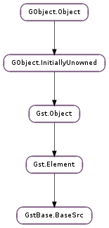

| Subclasses: | GstApp.AppSrc, GstBase.PushSrc |
|---|
| get_allocator() | |
| get_blocksize() | |
| get_buffer_pool() | |
| get_do_timestamp() | |
| is_async() | |
| is_live() | |
| new_seamless_segment(start, stop, time) | |
| query_latency() | |
| set_async(async) | |
| set_blocksize(blocksize) | |
| set_caps(caps) | |
| set_do_timestamp(timestamp) | |
| set_dynamic_size(dynamic) | |
| set_format(format) | |
| set_live(live) | |
| start_complete(ret) | |
| start_wait() | |
| wait_playing() |
| Name | Type | Flags | Description |
|---|---|---|---|
| blocksize | int | r/w | Size in bytes to read per buffer (-1 = default) |
| do-timestamp | bool | r/w | Apply current stream time to buffers |
| num-buffers | int | r/w | Number of buffers to output before sending EOS (-1 = unlimited) |
| typefind | bool | r/w | Run typefind before negotiating |
None
| Name | Type | Access |
|---|---|---|
| blocksize | int | r |
| can_activate_push | bool | r |
| element | Gst.Element | r |
| live_cond | GLib.Cond | r |
| live_running | bool | r |
| need_newsegment | bool | r |
| num_buffers | int | r |
| num_buffers_left | int | r |
| pending_seek | Gst.Event | r |
| random_access | bool | r |
| running | bool | r |
| segment | Gst.Segment | r |
| srcpad | Gst.Pad | r |
| typefind | bool | r |
Bases: Gst.Element
This is a generice base class for source elements. The following types of sources are supported:
The source can be configured to operate in any Gst.Format with the GstBase.BaseSrc.set_format () method. The currently set format determines the format of the internal Gst.Segment and any Gst.EventType.SEGMENT events. The default format for GstBase.BaseSrc is Gst.Format.BYTES.
GstBase.BaseSrc always supports push mode scheduling. If the following conditions are met, it also supports pull mode scheduling:
If all the conditions are met for operating in pull mode, GstBase.BaseSrc is automatically seekable in push mode as well. The following conditions must be met to make the element seekable in push mode when the format is not Gst.Format.BYTES:
When the element does not meet the requirements to operate in pull mode, the offset and length in the GstBase.BaseSrcClass.create() method should be ignored. It is recommended to subclass GstBase.PushSrc instead, in this situation. If the element can operate in pull mode but only with specific offsets and lengths, it is allowed to generate an error when the wrong values are passed to the GstBase.BaseSrcClass.create() function.
GstBase.BaseSrc has support for live sources. Live sources are sources that when paused discard data, such as audio or video capture devices. A typical live source also produces data at a fixed rate and thus provides a clock to publish this rate. Use GstBase.BaseSrc.set_live () to activate the live source mode.
A live source does not produce data in the PAUSED state. This means that the GstBase.BaseSrcClass.create() method will not be called in PAUSED but only in PLAYING. To signal the pipeline that the element will not produce data, the return value from the READY to PAUSED state will be Gst.StateChangeReturn.NO_PREROLL.
A typical live source will timestamp the buffers it creates with the current running time of the pipeline. This is one reason why a live source can only produce data in the PLAYING state, when the clock is actually distributed and running.
Live sources that synchronize and block on the clock (an audio source, for example) can use GstBase.BaseSrc.wait_playing () when the GstBase.BaseSrcClass.create() function was interrupted by a state change to PAUSED.
The GstBase.BaseSrcClass.get_times() method can be used to implement pseudo-live sources. It only makes sense to implement the GstBase.BaseSrcClass.get_times() function if the source is a live source. The GstBase.BaseSrcClass.get_times() function should return timestamps starting from 0, as if it were a non-live source. The base class will make sure that the timestamps are transformed into the current running_time. The base source will then wait for the calculated running_time before pushing out the buffer.
For live sources, the base class will by default report a latency of 0. For pseudo live sources, the base class will by default measure the difference between the first buffer timestamp and the start time of get_times and will report this value as the latency. Subclasses should override the query function when this behaviour is not acceptable.
There is only support in GstBase.BaseSrc for exactly one source pad, which should be named “src”. A source implementation (subclass of GstBase.BaseSrc ) should install a pad template in its class_init function, like so:
static void
my_element_class_init (GstMyElementClass *klass)
{
GstElementClass *gstelement_class = GST_ELEMENT_CLASS (klass);
// srctemplate should be a #GstStaticPadTemplate with direction
// #GST_PAD_SRC and name "src"
gst_element_class_add_pad_template (gstelement_class,
gst_static_pad_template_get (&srctemplate));
gst_element_class_set_static_metadata (gstelement_class,
"Source name",
"Source",
"My Source element",
"The author <my.sink@my.email>");
}
Controlled shutdown of live sources in applications
Applications that record from a live source may want to stop recording in a controlled way, so that the recording is stopped, but the data already in the pipeline is processed to the end (remember that many live sources would go on recording forever otherwise). For that to happen the application needs to make the source stop recording and send an EOS event down the pipeline. The application would then wait for an EOS message posted on the pipeline’s bus to know when all data has been processed and the pipeline can safely be stopped.
An application may send an EOS event to a source element to make it perform the EOS logic (send EOS event downstream or post a Gst.MessageType.SEGMENT_DONE on the bus). This can typically be done with the Gst.Element.send_event () function on the element or its parent bin.
After the EOS has been sent to the element, the application should wait for an EOS message to be posted on the pipeline’s bus. Once this EOS message is received, it may safely shut down the entire pipeline.
Last reviewed on 2007-12-19 (0.10.16)
| Return type: | allocator: Gst.Allocator, params: Gst.AllocationParams |
|---|
Lets GstBase.BaseSrc sub-classes to know the memory allocator used by the base class and its params.
Unref the allocator after use it.
| Returns: | the number of bytes pushed with each buffer. |
|---|---|
| Return type: | int |
Get the number of bytes that src will push out with each buffer.
| Returns: | the instance of the Gst.BufferPool used by the src; free it after use it |
|---|---|
| Return type: | Gst.BufferPool |
| Returns: | True if the base class will automatically timestamp outgoing buffers. |
|---|---|
| Return type: | bool |
Query if src timestamps outgoing buffers based on the current running_time.
| Returns: | True if src is operating in async mode. |
|---|---|
| Return type: | bool |
Get the current async behaviour of src. See also GstBase.BaseSrc.set_async ().
| Returns: | True if element is in live mode. |
|---|---|
| Return type: | bool |
Check if an element is in live mode.
| Parameters: | |
|---|---|
| Returns: | True if preparation of the seamless segment succeeded. |
| Return type: |
Prepare a new seamless segment for emission downstream. This function must only be called by derived sub-classes, and only from the create() function, as the stream-lock needs to be held.
The format for the new segment will be the current format of the source, as configured with GstBase.BaseSrc.set_format ()
| Returns: | True if the query succeeded. |
|---|---|
| Return type: | bool, live: bool, min_latency: int, max_latency: int |
Query the source for the latency parameters. live will be True when src is configured as a live source. min_latency will be set to the difference between the running time and the timestamp of the first buffer. max_latency is always the undefined value of -1.
This function is mostly used by subclasses.
| Parameters: | async (bool) – new async mode |
|---|
Configure async behaviour in src, no state change will block. The open, close, start, stop, play and pause virtual methods will be executed in a different thread and are thus allowed to perform blocking operations. Any blocking operation should be unblocked with the unlock vmethod.
| Parameters: | blocksize (int) – the new blocksize in bytes |
|---|
Set the number of bytes that src will push out with each buffer. When blocksize is set to -1, a default length will be used.
| Parameters: | caps (Gst.Caps) – a Gst.Caps |
|---|---|
| Returns: | True if the caps could be set |
| Return type: | bool |
Set new caps on the basesrc source pad.
| Parameters: | timestamp (bool) – enable or disable timestamping |
|---|
Configure src to automatically timestamp outgoing buffers based on the current running_time of the pipeline. This property is mostly useful for live sources.
| Parameters: | dynamic (bool) – new dynamic size mode |
|---|
If not dynamic, size is only updated when needed, such as when trying to read past current tracked size. Otherwise, size is checked for upon each read.
| Parameters: | format (Gst.Format) – the format to use |
|---|
Sets the default format of the source. This will be the format used for sending SEGMENT events and for performing seeks.
If a format of Gst.Format.BYTES is set, the element will be able to operate in pull mode if the GstBase.BaseSrcClass.is_seekable() returns True.
This function must only be called in states < Gst.State.PAUSED.
| Parameters: | live (bool) – new live-mode |
|---|
If the element listens to a live source, live should be set to True.
A live source will not produce data in the PAUSED state and will therefore not be able to participate in the PREROLL phase of a pipeline. To signal this fact to the application and the pipeline, the state change return value of the live source will be Gst.StateChangeReturn.NO_PREROLL.
| Parameters: | ret (Gst.FlowReturn) – a Gst.FlowReturn |
|---|
Complete an asynchronous start operation. When the subclass overrides the start method, it should call GstBase.BaseSrc.start_complete () when the start operation completes either from the same thread or from an asynchronous helper thread.
| Returns: | a Gst.FlowReturn. |
|---|---|
| Return type: | Gst.FlowReturn |
Wait until the start operation completes.
| Returns: | Gst.FlowReturn.OK if src is PLAYING and processing can continue. Any other return value should be returned from the create vmethod. |
|---|---|
| Return type: | Gst.FlowReturn |
If the GstBase.BaseSrcClass.create() method performs its own synchronisation against the clock it must unblock when going from PLAYING to the PAUSED state and call this method before continuing to produce the remaining data.
This function will block until a state change to PLAYING happens (in which case this function returns Gst.FlowReturn.OK ) or the processing must be stopped due to a state change to READY or a FLUSH event (in which case this function returns Gst.FlowReturn.FLUSHING ).